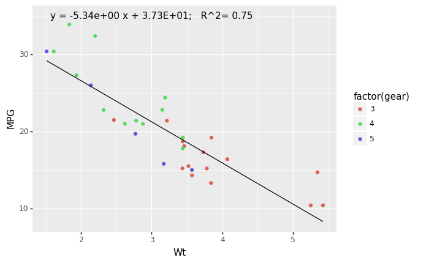

# sm.graphics.plot_regress_exog(model1,"x")
Making Predictions based on the Regression Results¶
import pandas as pd
import numpy as np
from plotnine import *
from plotnine.data import *
%matplotlib inline
(
ggplot(mpg, aes(x='displ', y='hwy'))
+ geom_point()
+ geom_smooth(method='lm')
+ labs(x='displacement', y='horsepower')
)
---------------------------------------------------------------------------
ModuleNotFoundError Traceback (most recent call last)
/var/folders/kl/h_r05n_j76n32kt0dwy7kynw0000gn/T/ipykernel_5741/1407400048.py in <module>
2 import numpy as np
3
----> 4 from plotnine import *
5 from plotnine.data import *
6
ModuleNotFoundError: No module named 'plotnine'
import plotnine as p9
from scipy import stats
from plotnine.data import mtcars as df
#calculate best fit line
slope, intercept, r_value, p_value, std_err = stats.linregress(df['wt'],df['mpg'])
df['fit']=df.wt*slope+intercept
#format text
txt= 'y = {:4.2e} x + {:4.2E}; R^2= {:2.2f}'.format(slope, intercept, r_value*r_value)
#create plot. The 'factor' is a nice trick to force a discrete color scale
plot=(p9.ggplot(data=df, mapping= p9.aes('wt','mpg', color = 'factor(gear)'))
+ p9.geom_point(p9.aes())
+ p9.xlab('Wt')+ p9.ylab(r'MPG')
+ p9.geom_line(p9.aes(x='wt', y='fit'), color='black')
+ p9.annotate('text', x= 3, y = 35, label = txt))
#for some reason, I have to print my plot
print(plot)

dir(model1)
['HC0_se',
'HC1_se',
'HC2_se',
'HC3_se',
'_HCCM',
'__class__',
'__delattr__',
'__dict__',
'__dir__',
'__doc__',
'__eq__',
'__format__',
'__ge__',
'__getattribute__',
'__gt__',
'__hash__',
'__init__',
'__init_subclass__',
'__le__',
'__lt__',
'__module__',
'__ne__',
'__new__',
'__reduce__',
'__reduce_ex__',
'__repr__',
'__setattr__',
'__sizeof__',
'__str__',
'__subclasshook__',
'__weakref__',
'_abat_diagonal',
'_cache',
'_data_attr',
'_data_in_cache',
'_get_robustcov_results',
'_is_nested',
'_use_t',
'_wexog_singular_values',
'aic',
'bic',
'bse',
'centered_tss',
'compare_f_test',
'compare_lm_test',
'compare_lr_test',
'condition_number',
'conf_int',
'conf_int_el',
'cov_HC0',
'cov_HC1',
'cov_HC2',
'cov_HC3',
'cov_kwds',
'cov_params',
'cov_type',
'df_model',
'df_resid',
'diagn',
'eigenvals',
'el_test',
'ess',
'f_pvalue',
'f_test',
'fittedvalues',
'fvalue',
'get_influence',
'get_prediction',
'get_robustcov_results',
'info_criteria',
'initialize',
'k_constant',
'llf',
'load',
'model',
'mse_model',
'mse_resid',
'mse_total',
'nobs',
'normalized_cov_params',
'outlier_test',
'params',
'predict',
'pvalues',
'remove_data',
'resid',
'resid_pearson',
'rsquared',
'rsquared_adj',
'save',
'scale',
'ssr',
'summary',
'summary2',
't_test',
't_test_pairwise',
'tvalues',
'uncentered_tss',
'use_t',
'wald_test',
'wald_test_terms',
'wresid']